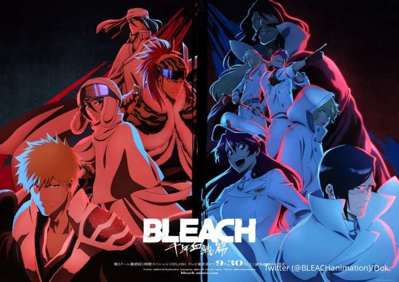

"Bleach" é um anime e mangá japonês criado por Tite Kubo. A história segue Ichigo Kurosaki, um adolescente com a habilidade de ver espíritos, que acidentalmente recebe os poderes de um shinigami, ou ceifador de almas, chamado Rukia Kuchiki.
Ichigo então assume o papel de shinigami temporário para proteger os vivos dos espíritos malignos conhecidos como Hollows. Conforme a série avança, Ichigo e seus amigos, incluindo seus colegas de classe Orihime Inoue, Yasutora "Chad" Sado e Uryu Ishida, enfrentam várias ameaças sobrenaturais. O enredo de "Bleach" é repleto de batalhas emocionantes, traições, amizades e descobertas sobre o mundo espiritual. Ao longo da série, Ichigo e seus aliados enfrentam diversos inimigos, incluindo outros shinigamis, grupos rebeldes e seres poderosos conhecidos como Arrancars.
A série explora temas como amizade, honra, sacrifício e responsabilidade. Além disso, possui uma ampla variedade de personagens carismáticos, cada um com habilidades únicas e motivações próprias. "Bleach" foi adaptado para anime, com várias temporadas que cobrem arcos importantes do mangá. Também inspirou filmes, OVAs (Original Video Animations) e jogos de vídeo game.
